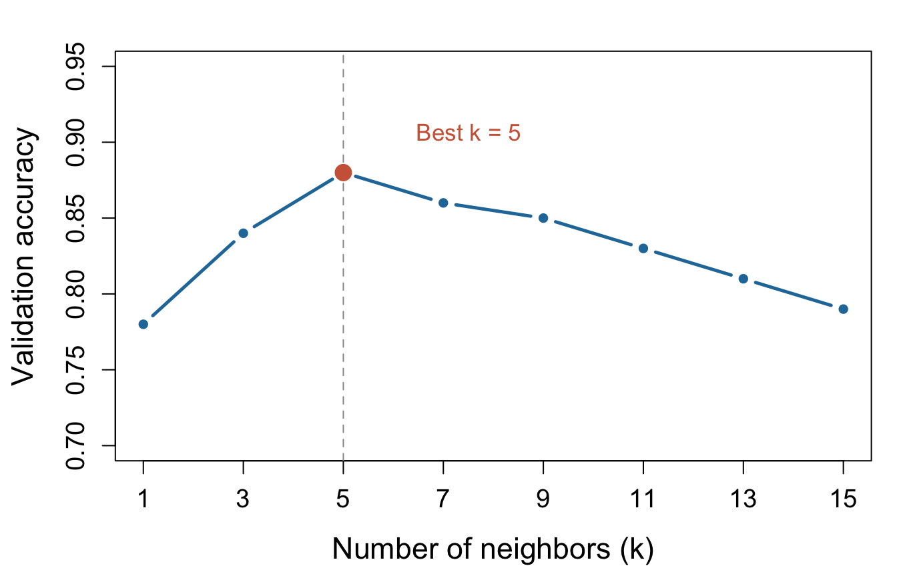

8 Hyperparameter tuning and cross-validation
Machine Learning for Life Sciences
Most supervised learning algorithms have hyperparameters that control their behavior and flexibility.
Unlike model parameters, which are learned from training data, hyperparameters are selected as part of the model development process.
For example:
- KNN: The number of neighbors (\(k\)).
- SVM: The regularization parameter (\(C\)), kernel type, and kernel parameters such as \(\gamma\) for the RBF kernel.
The aim of hyperparameter tuning is to identify settings that give good predictive performance on unseen observations.
8.0.1 Hyperparameter tuning using a validation set
Consider KNN classification. We want to choose the number of neighbors, \(k\).
A simple approach is to:
- Split the development data into training and validation sets, keeping the test set separate.
- Train KNN models using different values of \(k\), for example 1, 3, 5, 7, 9, and 11.
- Evaluate each model on the validation set using a chosen performance metric, such as accuracy.
- Select the value of \(k\) with the best validation performance.
However, selecting hyperparameters based on a single validation split has a limitation: the result may depend on which observations happen to be included in that split.
A different random split might produce a different optimal value of \(k\).
8.0.2 K-fold cross-validation
K-fold cross-validation (CV) provides a more systematic approach to model evaluation and hyperparameter selection.
Instead of using one fixed validation set, we divide the development data into \(K\) approximately equal-sized folds.
For each candidate hyperparameter value:
- Train the model using \(K-1\) folds.
- Evaluate it on the remaining fold.
- Repeat the process until each fold has served as the validation set once.
- Calculate the mean performance across all \(K\) folds.
For example, in 5-fold cross-validation, we train and validate the model five times, each time using a different validation fold.
The mean CV performance is:
\[ \overline{M}_{CV}=\frac{1}{K}\sum_{i=1}^{K}M_i \]
where \(M_i\) is the performance metric calculated on validation fold \(i\).
We can also calculate the standard deviation of performance across folds:
\[ SD_{CV}=\sqrt{\frac{1}{K-1}\sum_{i=1}^{K}(M_i-\overline{M}_{CV})^2} \]
The standard deviation describes how much performance varies across the validation folds. However, it should not be interpreted as a confidence interval for generalization performance.
We can compare mean CV scores for different values of \(k\) and select the one with the best performance.

For classification, stratified cross-validation is often used to preserve approximately similar class proportions across folds.
For datasets containing related samples, such as repeated measurements from the same patient, grouped cross-validation may be necessary to prevent information leakage.
8.0.3 Hyperparameter tuning in SVM
The same approach applies to other algorithms, including SVM.
Instead of varying the number of neighbors, we can evaluate different combinations of SVM hyperparameters:
- C: Controls the trade-off between a wide margin and penalties for margin violations.
- Gamma: Controls the locality of the RBF kernel and influences the flexibility of nonlinear decision boundaries.
A common approach is grid search, where we define a set of candidate hyperparameter combinations and evaluate each using cross-validation.
The combination with the best mean CV performance is selected.
8.1 Fitting and evaluating the final model
Once the best model and its hyperparameters have been selected using validation or cross-validation, we refit the model using all available training and validation data. This allows the model to learn from as many observations as possible before final evaluation. The fitted model is then evaluated once on the held-out test set, which has not been used during model development. This provides an independent estimate of how well the selected model generalizes to unseen data. When reporting results, we should describe the model, selected hyperparameters, data splitting strategy, and evaluation metrics, including their uncertainty when appropriate. After final evaluation, the model can be used to make predictions on new observations.
8.2 Nested cross-validation
Nested cross-validation uses two cross-validation loops to separate hyperparameter tuning from performance estimation. The inner loop selects the best hyperparameters (e.g., C for SVM) using cross-validation on the training data, while the outer loop evaluates the selected model on held-out folds that were not used during tuning. This process is repeated across all outer folds, and performance is summarized using the outer-fold results. Nested CV provides a less optimistically biased estimate of the generalization performance of the entire model-selection procedure. It is particularly useful for small datasets where we want to use the available observations efficiently for both model selection and evaluation.
8.2.1 Key takeaway
Hyperparameter tuning allows us to select model settings based on predictive performance rather than training performance alone.
Cross-validation makes this process less dependent on one particular training/validation split and allows us to summarize performance across several validation folds.
The test set remains separate throughout tuning and cross-validation. Once the best hyperparameters have been selected, we refit the model using all available development data and evaluate it on the held-out test set.
A good supervised learning model is not necessarily the one that fits the training data best, but the one that generalizes well to new, unseen observations.